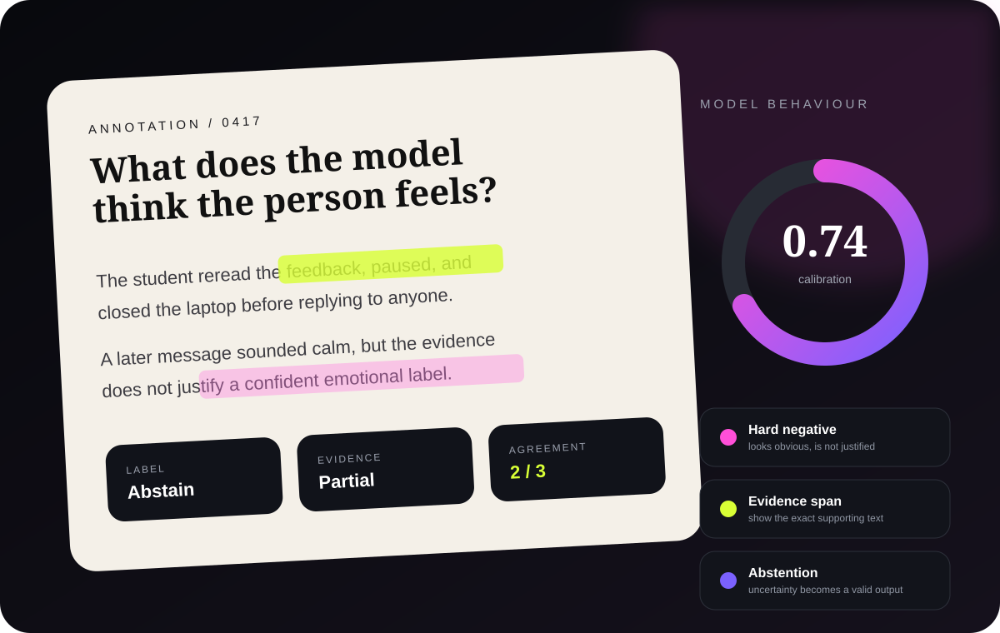

← Selected work
Human-AI interaction · Benchmark design · Abstention
Cognitive Mirror
A psychology-grounded benchmark design for testing whether language models can justify mental-state inferences—or know when not to infer.
Evidence status: Benchmark protocol and target design. The proposed 1,500–3,000 examples and three independent labels per item should not be read as a completed annotated dataset.

Why this
project exists.
Models can produce emotionally persuasive interpretations of people from very little evidence. Cognitive Mirror is designed to test not only whether a label matches an annotation, but whether the text contains sufficient support for making the inference at all.
Beyond label accuracy
A benchmark that contains only obvious examples rewards confident pattern matching. It does not test evidence discipline, calibration or the ability to abstain when a passage is ambiguous.
The design therefore treats evidence spans, hard negatives and annotator disagreement as first-class parts of the target.
Benchmark protocol
Planned research standard
The target design spans roughly 1,500–3,000 passages with frozen test sets and category-level reporting. The benchmark is intentionally described as a research plan until annotation and reliability studies are completed.
The project would require ethics review, careful construct definitions, demographic analysis and safeguards against using model outputs as clinical or interpersonal diagnoses.
A responsible model should sometimes answer: “the passage does not support that conclusion.”
Planned benchmark protocol
The older design notes specify a proposed corpus of approximately 1,500–3,000 passages, with at least 30% hard-negative items, annotated evidence spans, three independent reviewers per item, frozen evaluation splits and abstention-aware measurement.
These are registered design aims, not a completed dataset, human-adjudicated benchmark or independently measured model performance.